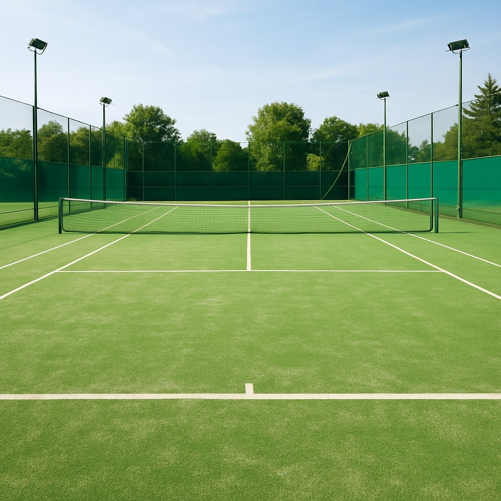
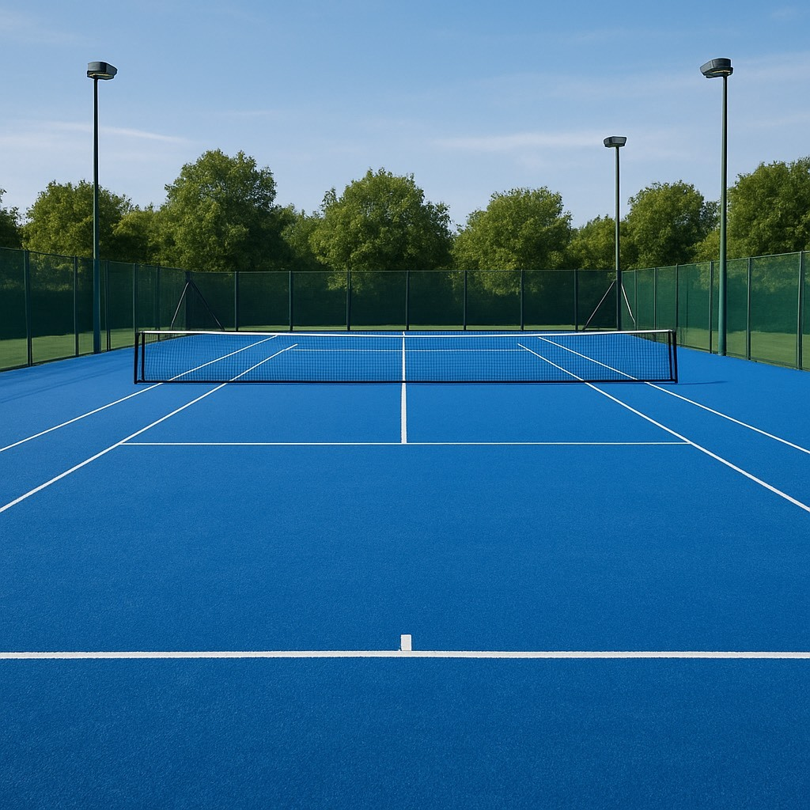
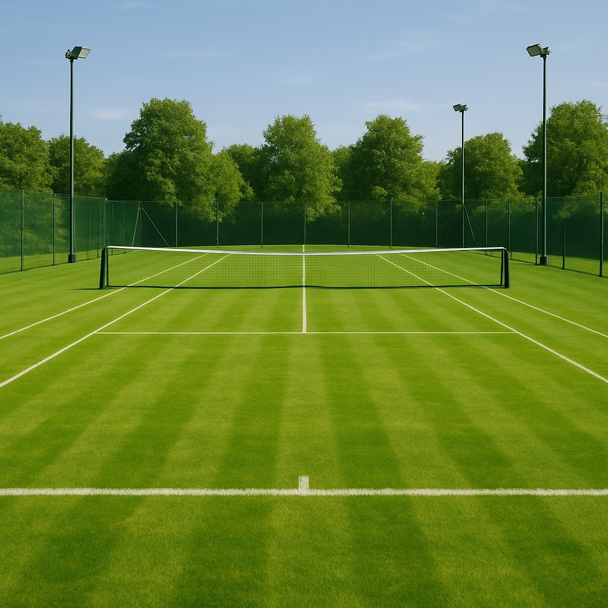

ハードコート

アスファルトやコンクリートなどの硬い素材でできたコートです。 ボールのバウンドが速く、比較的フラットなため、サーブやストロークが中心のプレーヤーに向いています。
クレーコート

土を固めたコートで、ボールのバウンドが遅く、滑りやすいのが特徴です。 ラリーが続きやすく、粘り強いプレーが求められます。
オムニコート

人工芝に砂を混ぜたコートです。クレーコートに似ていますが、 水はけが良く、雨の日でも比較的プレーしやすいのが特徴です。
グラスコート

天然芝でできたコートです。ボールのバウンドが低く、滑りやすいのが特徴で、 サーブやボレーが中心のプレーヤーに向いています。
カーペットコート

屋内コートでよく使われる、カーペットのような素材でできたコートです。 ボールのバウンドが比較的速く、足腰への負担が少ないのが特徴です。